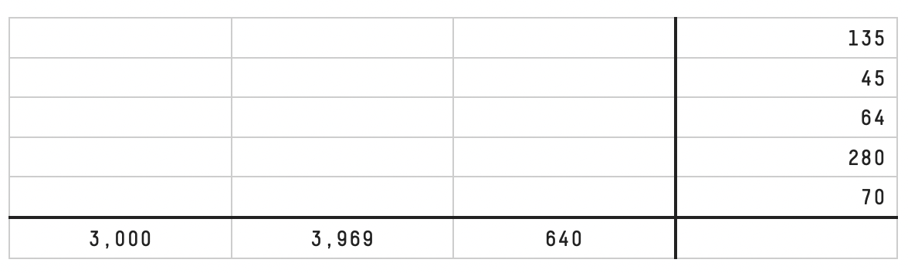

Riddler: Another Hunt For Mysterious Numbers
2021-02-06
This week’s FiveThirtyEight Riddler Express is similar to the Riddler Classic of two weeks ago:
By all accounts, Riddler Nation had a lot of fun hunting for the mysterious numbers a few weeks back. So here’s what we’re going to do: For the next four weeks, the Riddler Express will feature a similar puzzle that combines multiplication and logic. We’ll be calling these CrossProducts. For your first weekly CrossProduct, there are five three-digit numbers — each belongs in a row of the table below, with one digit per cell. The products of the three digits of each number are shown in the rightmost column. Meanwhile, the products of the digits in the hundreds, tens and ones places, respectively, are shown in the bottom row.

Two weeks ago, rather than searching for the solution manually, I solved this problem with linear programming in Julia. The advantage of that approach is that it is easy to apply to this new problem again — it should be a matter of changing the input numbers. Let’s see how it goes! Please refer to the aforementioned post for a more thorough explanation of the code.
using JuMP, GLPK
using Primes: factor, primes
using DataStructures: DefaultDict
row_prods = [135, 45, 64, 280, 70];
col_prods = [3_000, 3_969, 640];
prms = primes(1, 9);
n_prms = length(prms);
n_rows = length(row_prods);
n_cols = length(col_prods);Note that the only thing changed with respect to the previous post is that we initialized the problem with new row_prods and col_prods. The rest should be automatic.
row_factors = factor.(Dict, row_prods);
col_factors = factor.(Dict, col_prods);
row_factors = [[DefaultDict(0, row_factors[row])[prms[i]] for i in 1:4] for row in 1:n_rows]
col_factors = [[DefaultDict(0, col_factors[col])[prms[i]] for i in 1:4] for col in 1:n_cols]5-element Array{Array{Int64,1},1}:
[0, 3, 1, 0]
[0, 2, 1, 0]
[6, 0, 0, 0]
[3, 0, 1, 1]
[1, 0, 1, 1]
3-element Array{Array{Int64,1},1}:
[3, 1, 3, 0]
[0, 4, 0, 2]
[7, 0, 1, 0]Again, onto the actual problem definition.
model = Model(with_optimizer(GLPK.Optimizer))
@variable(model, 0 <= x[1:n_rows, 1:n_cols, 1:n_prms], integer=true)Make sure row and column prime multiplicities add up to the correct numbers.
for i in 1:n_rows, p in 1:n_prms
@constraint(model, sum(x[i, :, p]) == row_factors[i][p])
end
for j in 1:n_cols, p in 1:n_prms
@constraint(model, sum(x[:, j, p]) == col_factors[j][p])
endFinally, we want every cell to be an integer between 1 and 9, which means \(2^{p_2}\cdot 3^{p_3}\cdot 5^{p_5}\cdot 7^{p_7} \le 9\), or \(p_2\log(2) + p_3\log(3) + p_5\log(5)+p_7\log(7) \le \log(9)\), a constraint which is linear in its variables.
for i in 1:n_rows, j in 1:n_cols
@constraint(model, sum(x[i, j, :] .* log.(prms)) <= log(9))
endAnd that is all! Let JuMP do its magic and come up with a feasible solution. As an example, again we print out the number of times a 2 (the first prime) appears in every cell.
JuMP.optimize!(model)
solution = JuMP.value.(x);
solution[:, :, 1]5×3 Array{Float64,2}:
0.0 0.0 0.0
0.0 0.0 0.0
3.0 0.0 3.0
0.0 0.0 3.0
0.0 0.0 1.0The final solution to the riddle is then the product of every prime to the power of its multiplicity:
[[Int(prod(prms .^ solution[i, j, :])) for j in 1:n_cols] for i in 1:n_rows]5-element Array{Array{Int64,1},1}:
[3, 9, 5]
[5, 9, 1]
[8, 1, 8]
[5, 7, 8]
[5, 7, 2]Well, that was easy! For the first puzzle, the challenge was to come up with a model. From then on, it is just a matter of changing the inputs. It does feel a bit like cheating, though … I don’t think I’ll continue with these CrossProduct puzzles in this way.